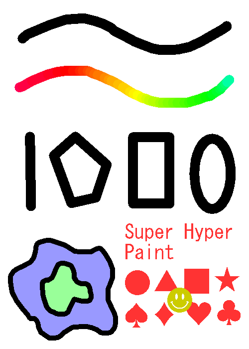

Super Hyper Paint
多彩な描画ツール
描画ツールは次の9種類が使用できます。
- ペンツール
 虹色ペンツール
虹色ペンツール- 消しゴムツール
- 直線ツール
- 多角形ツール
- 長方形ツール
- 楕円ツール
- 塗りつぶしツール
- テキストツール
- スタンプツール

便利な機能
レイヤー機能、「元に戻す」機能、フィルタ(画像加工)機能など、基本的な機能が使用できます。
また、作成した画像は保存することができ、既存の画像を開くこともできます。
プログラム
推奨動作環境は下のとおりです。- Windows10以降 64bit
- JRE 8